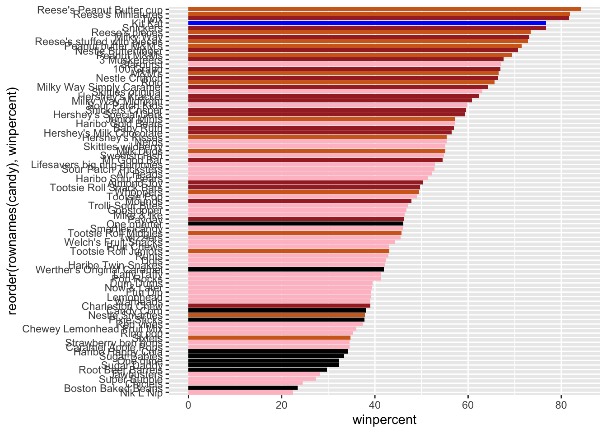
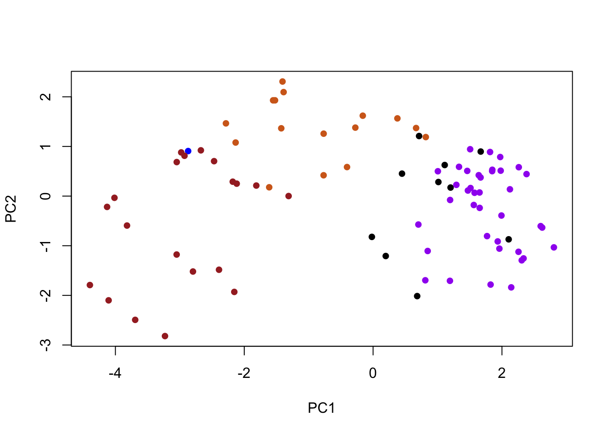
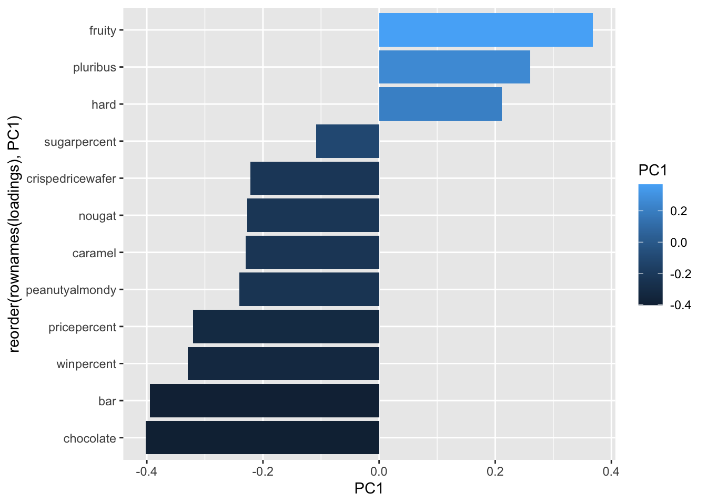
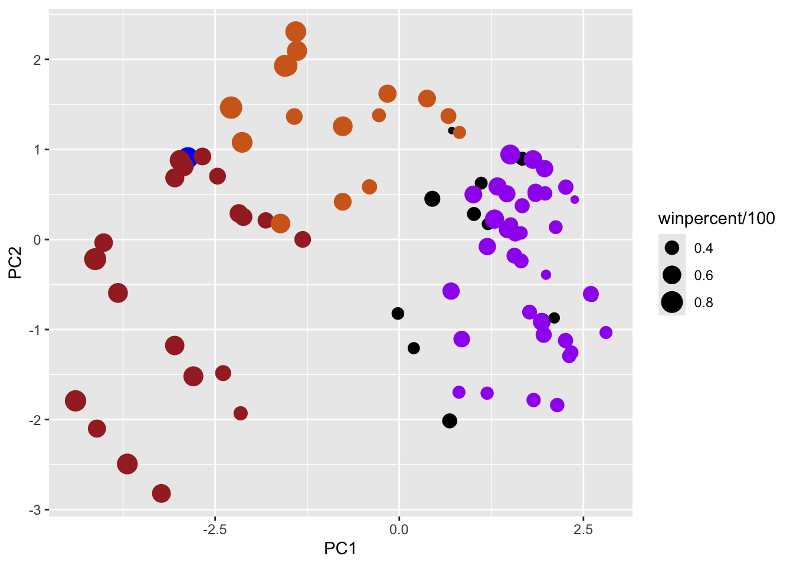
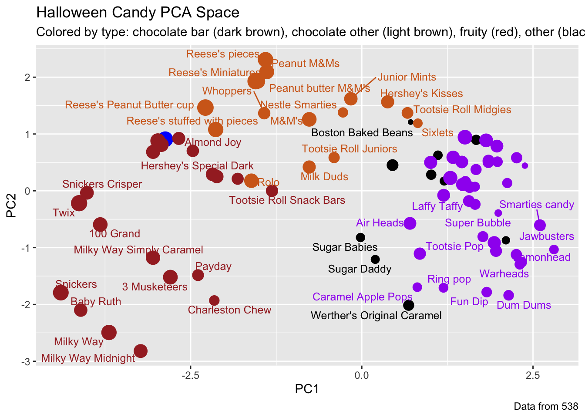

chocolate fruity caramel peanutyalmondy nougat
Air Heads 0 1 0 0 0
Haribo Gold Bears 0 1 0 0 0
Haribo Sour Bears 0 1 0 0 0
Lifesavers big ring gummies 0 1 0 0 0
Nerds 0 1 0 0 0
Skittles original 0 1 0 0 0
crispedricewafer hard bar pluribus sugarpercent
Air Heads 0 0 0 0 0.906
Haribo Gold Bears 0 0 0 1 0.465
Haribo Sour Bears 0 0 0 1 0.465
Lifesavers big ring gummies 0 0 0 0 0.267
Nerds 0 1 0 1 0.848
Skittles original 0 0 0 1 0.941
pricepercent winpercent
Air Heads 0.511 52.34146
Haribo Gold Bears 0.465 57.11974
Haribo Sour Bears 0.465 51.41243
Lifesavers big ring gummies 0.279 52.91139
Nerds 0.325 55.35405
Skittles original 0.220 63.08514
Q4. What is the winpercent value for “Kit Kat”?
candy['Kit Kat', 'winpercent']
[1] 76.7686
Kit kat has a win percent value of 76.7686%
Q5. What is the winpercent value for “Tootsie Roll Snack Bars”?
candy['Tootsie Roll Snack Bars', 'winpercent']
[1] 49.6535
Tootsie Roll Snack Bars have a win percent value of 49.6535%
Q6. Is there any variable/column that looks to be on a different scale to the majority of the other columns in the dataset?
library("skimr")skim(candy)
Data summary
Name
candy
Number of rows
85
Number of columns
12
_______________________
Column type frequency:
numeric
12
________________________
Group variables
None
Variable type: numeric
skim_variable
n_missing
complete_rate
mean
sd
p0
p25
p50
p75
p100
hist
chocolate
0
1
0.44
0.50
0.00
0.00
0.00
1.00
1.00
▇▁▁▁▆
fruity
0
1
0.45
0.50
0.00
0.00
0.00
1.00
1.00
▇▁▁▁▆
caramel
0
1
0.16
0.37
0.00
0.00
0.00
0.00
1.00
▇▁▁▁▂
peanutyalmondy
0
1
0.16
0.37
0.00
0.00
0.00
0.00
1.00
▇▁▁▁▂
nougat
0
1
0.08
0.28
0.00
0.00
0.00
0.00
1.00
▇▁▁▁▁
crispedricewafer
0
1
0.08
0.28
0.00
0.00
0.00
0.00
1.00
▇▁▁▁▁
hard
0
1
0.18
0.38
0.00
0.00
0.00
0.00
1.00
▇▁▁▁▂
bar
0
1
0.25
0.43
0.00
0.00
0.00
0.00
1.00
▇▁▁▁▂
pluribus
0
1
0.52
0.50
0.00
0.00
1.00
1.00
1.00
▇▁▁▁▇
sugarpercent
0
1
0.48
0.28
0.01
0.22
0.47
0.73
0.99
▇▇▇▇▆
pricepercent
0
1
0.47
0.29
0.01
0.26
0.47
0.65
0.98
▇▇▇▇▆
winpercent
0
1
50.32
14.71
22.45
39.14
47.83
59.86
84.18
▃▇▆▅▂
Looks like the winpercent variable or column is measured on a different scale than everything else. Need to scale my data before doing any analysis like PCA
##Q7. What do you think a zero and one represent for the candy$chocolate column?
A zero represents that the candy is not a chocolate (FALSE logical) while a one represents that the candy is a chocolate (TRUE logical)
##Q9. Is the distribution of winpercent values symmetrical?
No it appears to be skewed
##Q10. Is the center of the distribution above or below 50%?
summary(candy$winpercent)
Min. 1st Qu. Median Mean 3rd Qu. Max.
22.45 39.14 47.83 50.32 59.86 84.18
Because the distribution of the winpercent is not symmetrical (not normal) we should use the median to determine the center. The center of the distrbution is 47.83 which is below 50%
##Q11. On average is chocolate candy higher or lower ranked than fruit candy?
chocolate fruity caramel peanutyalmondy nougat
Air Heads 0 1 0 0 0
Caramel Apple Pops 0 1 1 0 0
Chewey Lemonhead Fruit Mix 0 1 0 0 0
Chiclets 0 1 0 0 0
Dots 0 1 0 0 0
Dum Dums 0 1 0 0 0
crispedricewafer hard bar pluribus sugarpercent
Air Heads 0 0 0 0 0.906
Caramel Apple Pops 0 0 0 0 0.604
Chewey Lemonhead Fruit Mix 0 0 0 1 0.732
Chiclets 0 0 0 1 0.046
Dots 0 0 0 1 0.732
Dum Dums 0 1 0 0 0.732
pricepercent winpercent
Air Heads 0.511 52.34146
Caramel Apple Pops 0.325 34.51768
Chewey Lemonhead Fruit Mix 0.511 36.01763
Chiclets 0.325 24.52499
Dots 0.511 42.27208
Dum Dums 0.034 39.46056
summary(chocolate_candy$winpercent)
Min. 1st Qu. Median Mean 3rd Qu. Max.
34.72 50.35 60.80 60.92 70.74 84.18
summary(fruity_candy$winpercent)
Min. 1st Qu. Median Mean 3rd Qu. Max.
22.45 39.04 42.97 44.12 52.11 67.04
On average, the chocolate candy has a higher rank in win percent (60.92%) compared to fruity candy (44.12%)
##Q12. Is this difference statistically significant?
# Perform a t-test for signficancet.test(chocolate_candy$winpercent, fruity_candy$winpercent)
Welch Two Sample t-test
data: chocolate_candy$winpercent and fruity_candy$winpercent
t = 6.2582, df = 68.882, p-value = 2.871e-08
alternative hypothesis: true difference in means is not equal to 0
95 percent confidence interval:
11.44563 22.15795
sample estimates:
mean of x mean of y
60.92153 44.11974
With a really small p-value we can conclude that there is a statistically significant difference between the win percent of chocolate and fruit candy
Overall Candy Rankings
Q13. What are the five least liked candy types in this set?
Base R Approach
head(candy[order(candy$winpercent),], 5)
chocolate fruity caramel peanutyalmondy nougat
Nik L Nip 0 1 0 0 0
Boston Baked Beans 0 0 0 1 0
Chiclets 0 1 0 0 0
Super Bubble 0 1 0 0 0
Jawbusters 0 1 0 0 0
crispedricewafer hard bar pluribus sugarpercent pricepercent
Nik L Nip 0 0 0 1 0.197 0.976
Boston Baked Beans 0 0 0 1 0.313 0.511
Chiclets 0 0 0 1 0.046 0.325
Super Bubble 0 0 0 0 0.162 0.116
Jawbusters 0 1 0 1 0.093 0.511
winpercent
Nik L Nip 22.44534
Boston Baked Beans 23.41782
Chiclets 24.52499
Super Bubble 27.30386
Jawbusters 28.12744
The top five favorite candy types in this data set are “Reese’s Peanut Butter cup”, “Reese’s Miniatures”, “Twix”, “Kit Kat”, “Snickers” (Highest -> Lowest)
Q15. Make a first barplot of candy ranking based on winpercent values.
Q16. This is quite ugly, use the reorder() function to get the bars sorted by winpercent?
ggplot(candy) +aes(winpercent, # Reorder function to put the highest win percent on topreorder(rownames(candy), winpercent)) +geom_col()
Q17. What is the worst ranked chocolate candy?
I want a more specialized color scheme where I can see both chocolate and bar and fruity, etc. all from one plot.
Roll our own color vector
Add that color vector onto ggplot aes layer fill =
# Place holder color vectormy_cols <-rep('black', nrow(candy))# Will override based on the indexmy_cols[as.logical(candy$chocolate)] <-'chocolate'my_cols[as.logical(candy$bar)] <-'brown'my_cols[as.logical(candy$fruity)] <-'pink'
Use blue for favorite candy = Kit Kat
Get all the rownames in candy
Find the point where it is the conditional is true
Index that value and turn that to a blue color
# Use blue for favorite candy = Kit Katmy_cols[rownames(candy) =='Kit Kat'] <-'blue'
ggplot(candy) +aes(winpercent, reorder(rownames(candy), winpercent)) +# Want the color in the geom layergeom_col(fill=my_cols)

The worst ranked chocolate candy are sixlits
Q18. What is the best ranked fruity candy?
The best ranked fruity candy are starbursts
Takin a look at pricepercent
Plot of winpercent vs pricepercent to see what would be the ebst candy to buy
my_cols[as.logical(candy$fruity)] <-'purple'
ggplot(candy) +aes(x = winpercent, y = pricepercent) +geom_point(col = my_cols)
plot(pca$x[,1], pca$x[,2], col = my_cols, pch =16,xlab='PC1',ylab='PC2')

ggplot approach
How do the original variables (columns) contribute to the new PCs. I will look at PC1 here
# Putting the candy data with the rotation dataloadings <-as.data.frame(pca$rotation)ggplot(loadings) +aes(PC1,reorder(rownames(loadings), PC1),fill=PC1) +geom_col()

Interpretation
Anything on the positive side is fruity and hard candy
Anything on the negative side is chocolate and bar candy
plot(pca$x[,1:2], col=my_cols, pch=16)
# Make a new data-frame with our PCA results and candy datamy_data <-cbind(candy, pca$x[,1:3])
p <-ggplot(my_data) +aes(x=PC1, y=PC2, size=winpercent/100, text=rownames(my_data),label=rownames(my_data)) +geom_point(col=my_cols)p

library(ggrepel)p +geom_text_repel(size=3.3, col=my_cols, max.overlaps =7) +theme(legend.position ="none") +labs(title="Halloween Candy PCA Space",subtitle="Colored by type: chocolate bar (dark brown), chocolate other (light brown), fruity (red), other (black)",caption="Data from 538")
Warning: ggrepel: 39 unlabeled data points (too many overlaps). Consider
increasing max.overlaps

library(plotly)
Attaching package: 'plotly'
The following object is masked from 'package:ggplot2':
last_plot
The following object is masked from 'package:stats':
filter
The following object is masked from 'package:graphics':
layout